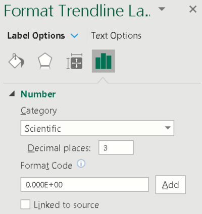

Fluorescence Measurement Demo
Fluorescence occurs when the electrons of certain chemical compounds are excited by beam of light causing them to emit light at a different and typically longer wavelength. The intensity of the emitted fluorescent light is linear for a broad range of concentration of the substance. The method of measuring fluorescence intensity to obtain the concentration of the material is advantageous over standard colorimetry due to its specificity and resistance to noise. Since only the target chemical compound emits light at a different wavelength, using a detector or optical filter which detects or passes narrowband light centered at that wavelength decreases interference from the source or incident light.
General Description
The CN0503 is a four-channel optical platform capable of fluorescence, absorbance and scattering measurements for liquid solutions. Getting the concentration of a compound in a liquid solution using fluorescence involves either directly measuring the emitted light from the compound or from an added a reagent which introduced fluorescent material proportional to the concentration of the target compound. The sensor used is the fluorescence photodiode placed perpendicular to the light path from the source LED. This photodiode is sensitive to longer wavelength light than the transmit photodiode placed directly in the light path. Its position and spectral sensitivity help to remove any interference from the source LED to the fluorescent light samples. Additionally, an optical fluorescent filter (narrowband longpass filter) is inserted in the slot in front of the sensor to further isolate fluorescent light from noise.
The demo shows how directly measuring fluorescent light from tonic water indicates the presence and level of quinine. Directing 365nm wavelength light to tonic water causes the quinine in the solution to fluoresce blue light at around 450nm. The intensity of light that fluoresces from quinine is proportional to its concentration at low levels.
Demo Requirements
The following is a list of items needed in order to replicate this demo.
CN0503, completely assembled (see Hardware User Guide)
EVAL-ADICUP3029 with firmware (see Software User Guide)
Host computer with CN0503 software (see
Quick Setup Guide) and Microsoft Excel (Optional for setting up computation of concentration)Tonic water from commercial brands
Setting Up the EVAL-CN0503-ARDZ
Before starting with these steps, please check the Hardware User
Guide for the steps to assembling the CN0503.
Additionally, please check the Software User Guide for
the steps in setting up the firmware and the Quick Setup Guide for running the software. This demo
assumes that you already have an assembled board with a working firmware
already programmed on the EVAL-ADICUP3029 and a ready-to-run software in
the host computer.
Configure the on-board jumper shunt connection as below:
Jumper Header |
Setting |
Image |
|---|---|---|
LD1SELL IOSEL P1.8V |
Set to VARD Set to ARD Shorted |


|
Important
You can use either path 1 or 4 for fluorescence measurements. The steps outlined here will use path 1, and the settings: LED1, P1ASEL, and P1BSEL.
Connect the 365nm LED Board and the 615nm LED Board to LED1.
Place the fluorescent filter into the slot in front of PD1B. and set the jumper connection as below:
Jumper Header |
Setting |
Image |
|---|---|---|
P1ASEL P1BSEL |
Set to 90DEG Set to REF |

|
Performing a Fluorescence Measurement
Connect the EVAL-ADICUP3029 to the EVAL-CN0503-ARDZ and connect a microUSB-to-USB cable from the board to the host computer.
Run the software (using python scripts or the executable) and wait for the main window to open.
Click the Gear icon at the top right of the window to open Settings.

In the settings window, select the correct COM Port of the device and then click the
Connectbutton. (seeQuick Setup Guidefor help)Load the configuration file for Fluorescence Measurement:
CN0503 Configuration FileConfigure the settings for path 1 with the desired name (e.g., Quinine), set wavelength to 365.0, and select measurement type: Fluorescence.
Add empty cuvette/s (or filled with distilled water) to the cuvette holder assembly, and insert to path 1. Set the jumper connection of P1ASEL temporarily to 0DEG. This uses the transmit photodiode directly in the path of light from LED1 to check and measure the intensity of the light source.
Click the
Optimize LEDbutton. This properly sets the LED current in the path so that the light intensity measured by the photodetector is close to 50%.Return the P1ASEL jumper connection to 90DEG and click
Okayhere and on the settings window to go back to the main. Remove the empty cuvette or distilled water sample.
Place a cuvette with filled with tonic water sample levelled just below the marking, as shown below, to the cuvette holder in path 1.
Select path 1, set display mode to INS1, and press
Start Measurement. The concentration of quinine in g/L will be shown in a live plot as shown below.For quick demo purposes, the system was configured in path 1, by default, using a polynomial approximation. Check the Computing Concentration section for more details.
{kind=link}
Note
Optionally, you can set the unit displayed in the plot to g/L
by writing this in the primary unit field of path 1 found by clicking the
Advanced button in the Settings window.
Computing Concentration
The CN0503 measures the intensity of the fluorescent light through a right angle photodiode and the intensity of the incident light through a reference photodiode. A polynomial approximation for computing quinine concentration can be modeled using the ratios of the two intensities measured from samples of known values.
Important
The configuration file in cn0503_defaults_fluorescence.zip
has already been set up to include everything in this section to calculate the
concentration of quinine. There is no need to perform the steps below unless
to make changes in the calculation.
The ratio of the fluorescent light intensity and incident light intensity is calculated using the CN0503 firmware and is called the absolute ratio (ARAT).
The computation of the ARAT is configurable through software in reverse polish notation (RPN). The variable naming format for the measured light intensities is shown below:
<light path><photodiode number> where: <light path> = A for path 1, B for path 2, C for path 3, D for path 4 <photodiode number> = 1, 2
For path 1 and 4, the photodiode 1 can be configured to the transmit photodiode (directly in the light path) or the right-angle (fluorescent) photodiode, through the P1ASEL and P4ASEL headers, respectively, while photodiode 2 can be configured to the right-angle (fluorescent) photodiode or the reference (incident) photodiode. You can use the DEFX ARAT command to change the ARAT equation. The example shown below sets the ARAT computation in path 1 which subtracts a 2048 raw ADC offset from each light intensity value in the ratio.
Optionally, the CN0503 allows setting a baseline ratio to remove small factors contributed by the optical glass elements such as the beams splitter, lens, and filters. The ARAT value is divided by the baseline ratio to produce the relative ratio (RRAT). The common way to set the baseline ratio is to take the average ARAT when its expected value is 1. For this demo, the baseline ratio is neglected and set to 1.
Using samples with known quinine concentration, the measured RRAT values for each are used as data points for the polynomial approximation.
A 3rd order polynomial approximation can be obtained from the trendline of the x-y scatter plot of the data.
{kind=link}
Important
The number of significant digits of the coefficients of the polynomial equation is crucial to the accuracy of the approximation. However, the CN0503 also has an 80-character limit for each command. It is recommended to use a 3 decimal digit scientific notation for the coefficients.
The polynomial approximation is applied to the CN0503 using the DEFX INS1 or DEFX INS2 command (See the Software User Guide for more details on this). Once set, the INS1 and INS2 values represent the approximated quinine concentration.
{kind=link}